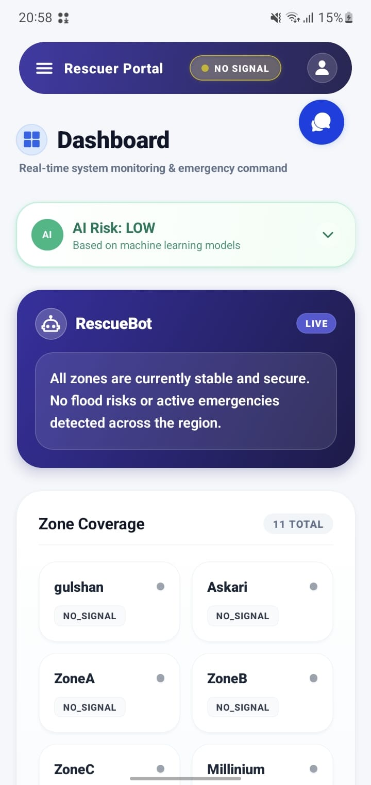

Projects
RapidRelief
Final Year Project | Offline-First Flood Emergency & Rescue SystemThe Problem
RapidRelief is an integrated hardware and software disaster-management system built to solve a critical problem: when floods destroy cellular and internet infrastructure, victims have no way to call for help. We engineered an independent solution that works even when standard networks fail.
Key Features
- Custom battery-powered IoT hardware nodes (ESP32 + LoRa radio) forming an independent mesh network across disaster zones — no internet or cellular required.
- Cross-platform mobile app (React Native) allowing victims to connect via Bluetooth and send offline SOS alerts, GPS coordinates, and emergency messages.
- Signals relay across the LoRa mesh until reaching an internet-connected gateway, then forward instantly to a live admin dashboard.
- Rescuer/admin web dashboard with real-time interactive mapping of SOS hotspots for resource coordination and dispatch.
- High-concurrency backend API built to handle simultaneous incoming emergency signals in real time.
My Role & Contribution
As the Backend Developer on a 4-person team, I built the FastAPI backend handling real-time data sync, Firebase integration, and deployment infrastructure.
Outcome
Bridges the communication gap during the most critical hours of a disaster, ensuring no call for help goes unheard when standard infrastructure fails. The AI detection component achieved a 92.5% accuracy in testing.


Other Projects
Enterprise LAN Architecture
Packet Tracer Simulation
Designed and implemented a complex multi-VLAN campus network using Cisco Packet Tracer. Included OSPF routing, strict ACLs for access control, and redundancy protocols.
Ethical Hacking Simulator
Security Research
Set up isolated virtual environments to simulate and analyze common network vulnerabilities, demonstrating exploit mechanics and verifying mitigation strategies.